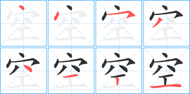
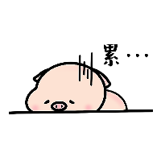
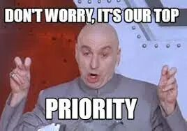
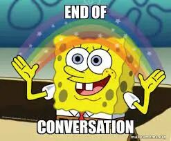

很久没有写文章了。
上一篇发出来的文章还是在6月2日，后来6月20日写了一篇，自己觉得写得太烂了，当时就没好意思发出来。
今天会把当时写的附在文末，基本上没啥干货，就是一些打鸡血的内容。
币
大致聊聊最近的币市情况。
币市全面进入了熊市，Defi的发展却一点没有停下脚步。
一方面链上的游戏，比如Axie彻底火了，然后一些NFT项目也开始死灰复燃，甚至变得非常热。有一些人甚至觉得今年的夏天将会是一个NFT summer。
另一方面，真正的layer2项目（polygon按照V神的意思，仅仅是一个短期的solution）optimism，arbitrium即将在7月底正式上线，EIP1559也即将开启。
这些事情的真正落地，在当前的熊市环境下对于ETH的币价可能没有那么大的推动作用。
但是我相信长期来看，这样的基本面的根本性改善将会像比特币减半一样，成为币价上涨的强大动力。
我
我自己还是继续做一些比较稳健的Defi挖矿，精力投入比较有限，新矿也冲得少了。
虽然这样收益相对较低，但是相比币圈外的投资也还是高很多了。
除了关注币圈，我自己终于得以把之前没锻炼的身体锻炼起来，长期没有好好冥想的mind好好整理一下，然后把之前没看完的书捡起来了。
终究那样高强度的生活没有办法持续太久的。。。那样子太累了。

锻炼
我目前的锻炼主要分两块，一块是瑜伽，另外一块是篮球。
瑜伽我主要跟着Dashama Konah在《每日瑜伽》app上的视频来做。她的跟做视频相对来说比较短小精悍，而且强度对我来说也比较适宜，也有很多的冥想练习加以辅助。
瑜伽带来的好处有三个。
最重要的是柔韧性。之前一段时间的高强度生活让我的左肩，右侧下背部非常紧张，经常非常酸痛，甚至有时候有别住的感觉。在做了一段时间瑜伽以后这样的感觉明显有所好转，右肩彻底打开了，右侧下背部也不紧张了，没有了酸痛的感觉。
顺便提一下，除了瑜伽的拉伸，缓解酸痛的另一个利器是用泡沫轴来做按摩，尤其是那种可以震动的泡沫轴，特别有效。
瑜伽还给我带来的是平静的mind。做瑜伽的过程当中需要极度的专注，很多动作非常重视呼吸的配合，也有一些训练干脆就是呼吸的练习。这让我得以主动地放松下来，平复由于高强度工作带来的持续紧张感。
最后是一种规律感。随着我个人的事业重心越来越从为公司打工变为为自己打工，时间自由的同时，对于生活的掌控感也逐渐减弱。这也带来一定程度上的焦虑，总是害怕自己没有把自己的时间做到最优。
而瑜伽作为一个不太需要依赖外部环境的简单锻炼，可以很方便地让我每天在比较固定的时间来做，让我对生活生出一定程度的掌控感，缓解我的焦虑情绪。
而篮球更多给我的改善是在心肺功能上的。至今一个月多的每周几次，每次1个半小时的篮球锻炼明显让我的体力好了不少。
书
最近又捡起了之前没看完的 《The Almanack of Naval Ravikant》。尤其重点在看的是他关于Happiness以及Saving yourself这两个章节。
他有一句话我很喜欢，也是我想要不停地，反复地告诉我自己的话。
My number one priority in life, above my happiness, above my family, above my work, is my own health. It starts with my physical health. Second, it's my mental health. Third, it's my spiritual health. Then, it's my family's health. Then, it's my family's wellbeing. After that, I can go out and do whatever I need to do with the rest of the world.
之前我之所以把自己的身体搞到那么糟，就是因为没有真正地把我自己的health放到 number one priority上。如果我真的把health放在number one priority上，可以为此牺牲钱，牺牲工作，那我就不会在早上一次又一次地由于“急事”放弃锻炼。
当我们说我们没法规律锻炼，因为没有时间的时候。其实我们是在说：It's not a priority. 如果锻炼真的是priority，是比工作，赚钱更重要的事情的话，我们一定可以为它挤出时间的。
而当我们挤出对应的时间的时候，身体也会以相应的方式回馈于我们。

完
未来的很多周，我应该都会是一个休养的状态。当然我还是会继续关注币圈的动向，同时多多看书，多多思考，多多跟人聊天交流，不过number one priority还是health。
下期再见。

附之前没发出来的文章
=====================
币圈随记 2021.6.20
这期可能是币圈随记的最后一期。
随着币圈行情的慢慢变淡，Defi的收益也显著地下降了，同时币价也基本就是在盘整中下跌，并没有很多的赚钱机会。
我个人因此也有机会享受了一段时间的休息，好好地把之前累积下来没有做的杂事一点点都处理掉了。
很显然，牛市暂时地离我们而去了，下一次牛市要再来，如果是重现2013年，则是会在3-6个月以后，如果是重现2017年，则是会再过3-4年。
我个人觉得鉴于这一波牛市并没有出现一个明显的冲顶迹象，因此更可能的是目前的状况仅仅是一个中间的状态，更有可能会像2013年的双顶结构。因此我主要还是继续观望，挖一些比较低收益的，稳定的矿，等待市场3-6月后的那一波机会。
就算3-6个月以后没有第二波顶，我觉得时间也是站在我这一边的，我等得起。Defi的生态从去年9月份一直发展到现在，整个以太坊锁定的资产从70亿美金增长到现在的1000多亿美金，相比起2017年ICO盛况时的稚嫩已经远远不能同日而语了。而以太坊的币价仅仅是相对于上一轮1400美金的高点增长到目前2000美金出头的这个样子。我个人相信假以时日，以太坊的总市值也会像它的生态起飞一样，同步地起飞。
聊聊我最近在休息之间做的几件事情吧。
Ethglobal 的Hackmoney Hackathon
这周参与了这个Hackmoney的Hackathon，听了不少Defi项目方介绍他们的项目。
我个人觉得这个Hackathon实际上是一个了解Defi生态绝佳的机会。基本上所有的比较大一点的Defi项目都参与了这次Hackathon。
项目方的人会亲自告诉你他们的项目是用来干什么的，解决了什么问题，然后手把手地教你怎么用，怎么在上面开发，项目底层的运行机制是什么。
之后在参赛的过程当中，如果你对于某一个项目特别感兴趣，基于某一个项目的基础上进行开发，还可以跟相关的项目方的开发人员进行更加深入的交流。
总之，如果有空的话，非常推荐来参与一下这个hackathon，或者至少看看youtube上的视频。
帮着联系一些海外的矿场资源
最近国内矿场的业务被全面封停了，就连四川这样相对来说比较环保的电力也全面封掉了，因此国内大量的矿机都急需出海，寻找新的合适的地点继续进行挖矿的业务。
美国，加拿大这里，其实不少地方都有相当丰富且便宜的电力资源。光光我自己认识的，就有一些在加拿大以及美国德州的朋友具有一些合适的电力资源。如果有朋友在国内有合适的矿机资源，有渠道运到美国或者加拿大这里，也可以给我留言细聊合作事宜。
修整再修整
除掉上面两件，我最近主要的事情还是在修整，把之前牛市时候欠下的债一点点还上。把身体锻炼起来，冥想重新捡起来，饮食健康规律起来等等。最终赚钱的目的终归是把生活过得更好，还是不能把主次颠倒。
所以下一期文章的话题可能就不会全都是关于币的了，我可能还是会聊一些Defi，但是可能会更加偏重技术一点。
大概就这样，下期再见啦。